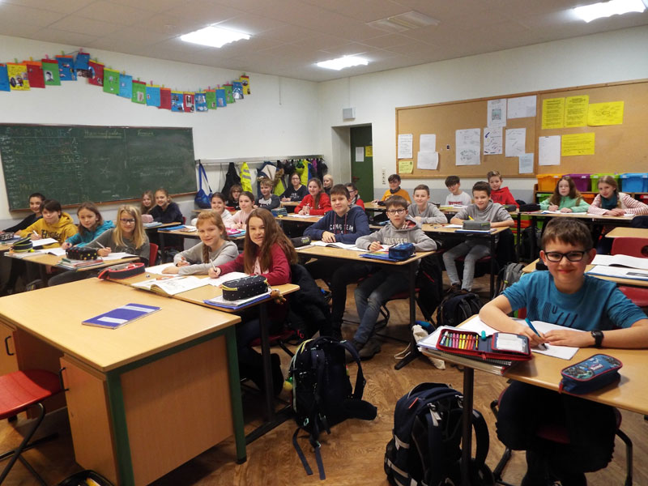
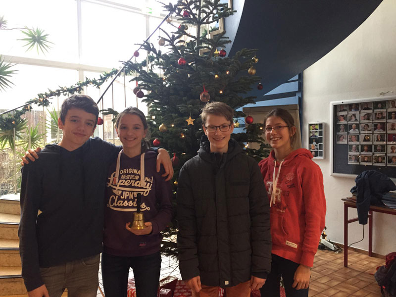

Infos vom Stadtverkehr Lübeck
 Der Stadtverkehr Lübeck informiert zum Fahrplanwechsel der Linien 9-Leibniz und 17. Die Informationen sind HIER abrufbar.
Der Stadtverkehr Lübeck informiert zum Fahrplanwechsel der Linien 9-Leibniz und 17. Die Informationen sind HIER abrufbar.
Der Stadtverkehr Lübeck informiert zum Fahrplanwechsel der Linien 9-Leibniz und 17. Die Informationen sind HIER abrufbar.
Jochen Harder zum dritten Mal Schulsieger
Auch in diesem Jahr ist Jochen Harder aus dem E-Jahrgang sehr erfolgreich und gewinnt den Geographie-Wettbewerb am Leibniz-Gymnasium. Im März wird er am Landeswettbewerb teilnehmen, in dem er sich in den letzten beiden Jahren auch schon als einer der besten Geographieschüler des Landes qualifiziert hatte.
Sehr gute Leistungen zeigte auch Finn Augustin, der knapp hinter Jochen den zweiten Platz belegte. In den Jahrgängen 8 und 9 waren in diesem Jahr die Mädchen besonders erfolgreich. Es gewannen im 9. Jahrgang Keana Strüben und Hannah Fechner. Die Siegerinnen des Jahrgangs 8 sind Alicia Benn und Charlotta Wiesner.
Die Jahrgangsbesten erhielten nicht nur eine Urkunde, sondern auch Preise wie Spiele, Globus-Wasserbälle oder Rubbellandkarten.
Wir sind gespannt, wie Jochen in der Landesrunde abschneiden wird, und wünschen ihm weiter viel Erfolg!
A. Erz
Wir, die Klasse 7a vom Leibniz-Gymnasium, Bad Schwartau, wollten unbedingt ein Klassenhaustier besitzen, konnten dies aber (selbstverständlich) nicht. Da sahen wir das Plakat vom SEA LIFE Center: In einem Wettbewerb zum Thema „Krebse“ konnte man für zwei Wochen ein Aquarium mit Krebsen für seine Klasse gewinnen. Wir alle waren sofort begeistert, begannen Origigami-Meerestiere zu falten und ein riesiges Meer zu gestalten, wobei uns unser Klassenlehrer Herr Ehlers tatkräftig unterstützte. Wir schickten das Werk an das SEA LIFE Center in Timmendorfer Strand und bekamen einige Wochen später die Rückmeldung, dass unser Projekt zwar nicht das beste war, aber dennoch so gut, dass wir einen Gratis-Besuch für unsere Klasse im Meeresaquarium gewannen.
Am 24.1.2018 lösten wir unsere Einladung ein und fuhren ins schöne Timmendorfer Strand, wo wir beeindruckende Fische, Krebse, Quallen und andere Meeresbewohner sahen. Wir alle würden das SEA LIFE Center jedem Meeresfan weiterempfehlen.
Hendrik Heinemeier
Liebe Schüler/-innen, Eltern und Lehrer,
ab sofort sind HIER die neuen Stundenpläne jeweils für die Klassen abrufbar. Die Pläne sind ab dem 04. Februar 2019 gültig. Wir wünschen allen einen guten Start ins neue Halbjahr!
Der Profilkurs Englisch Q1a (Frau Schmidt) hatte diesen Mittwoch die einzigartige Gelegenheit, die US-amerikanische Autorin Christina Dalcher zu ihrem im Sommer 2018 erschienenen Roman „Vox“ zu interviewen.
Während der unterrichtlichen Arbeit mit dem dystopischen Roman ergaben sich mehrere zentrale Diskussionspunkte und Fragen, die die Schülerinnen und (der) Schüler (Zitat Dalcher: „The one clever dude“) schließlich in einer Mail an die Autorin richteten.
Die Begeisterung war groß, als Christina Dalcher auf äußerst sympathische Weise antwortete und sogar eine Facetime Session mit dem ganzen Englischkurs anbot. - What a chance!
Da sie nun die Möglichkeit hatten, 60 min mit der Autorin zu gestalten, haben die Schüler ihren Fragenkatalog ausgefeilt und erweitert, indem sie u.a. veröffentlichte Interviews lasen und ihre Fragen daran anknüpften.
Die Vorbereitung wurde reichlich belohnt. Christina Dalcher hat uns einen informativen und spannenden Einblick in die Arbeit mit ihrer Agentin gewährt als auch in Aspekte ihrer Recherche, welche man als Leser von „commercial fiction“ (die in diesem Fall sowohl Thriller-Komponenten als auch eine Art „Message“ enthält) schlichtweg unterschätzt und auch in Aspekte, die man als Autorin einfach erfindet, um die Geschichte rund zu kriegen.
Bezüglich der Frage, inwiefern Dalcher „Fiction“ im Vergleich zu „Facts“ für besonders geeignet halte, Menschen vor dystopischen Entwicklungen zu warnen, wurde deutlich, dass die Autorin hier eine grundsätzliche Möglichkeit sieht, junge Menschen über den Umweg von Romanen zur Beschäftigung mit Geschichte zu bringen. Sie habe hier v.a. die abnehmende Zahl jugendlicher Leser in den USA vor Augen. Einen kritischen gesellschaftshistorischen Anknüpfungspunkt sieht Dalcher z.B. in der sog. culture of (female) domesticity, welche im Verlauf der amerikanischen Geschichte mehrfach wiederbelebt worden sei und welche in „Vox“ innnerhalb des Konzepts des „Pure Movement“ Ausdruck finde.
Mehrfach lobte Christina Dalcher die exzellenten und originellen Fragen der Schüler, doch keine Antwort erhielten wir auf die Frage, wen sie im Falle einer Verfilmung für die Rolle der drei Protagonisten casten würde. Der Grund: Es laufen bereits Verhandlungen.
Insgesamt hatten wir eine unvergessliche, bereichernde Englischstunde mit der Autorin. Es war schön mitzuerleben, dass Frau Dalcher, abgesehen von ihrer gewinnenden Ausstrahlung, durch ihr aufrichtiges Interesse am Austausch mit ihrer (jugendlichen) Leserschaft überzeugt.
Umso mehr erwarten wir mit Spannung die Umsetzung ihres nächsten Romanprojekts (Thema: „Eugenics“).
Frau C. Schmidt
 Eltern- und Schüler-Information für die neuen 5. Klassen
Eltern- und Schüler-Information für die neuen 5. Klassen
am Do., dem 14.02.19, 17.30 – 20.00 Uhr
Am Leibniz-Gymnasium finden die Informationsveranstaltungen der Eltern und der Schüler/-innen der vierten Klassen an demselben Tag statt, nämlich am Donnerstag, dem 14.02.19. Die Information für die Viertklässler beginnt in der großen Sporthalle und die für deren Eltern in der Pausenhalle des Leibniz-Gymnasiums. Auf diese Weise können die Viertklässler die Schule spielerisch an verschiedenen Stationen kennenlernen, während ihre Eltern über die Schulart, das Schulprofil, das pädagogische Konzept und das Schulleben insgesamt informiert werden, bevor sich auch für sie ein Rundgang durch die Schule anschließt.
An diesem Tag möchten wir gern allen Besuchern ermöglichen, das Leibniz-Gymnasium in seinen verschiedenen Schwerpunkten und seiner engagierten Schülerschaft kennen zu lernen. Dazu werden sich auch die neuen Klassenleitungsteams und verschiedene Fachschaften vorstellen.
Wir freuen uns auf zahlreiches Interesse und hoffen, von unserer pädagogischen Arbeit überzeugen zu können.
B. Jaecks, Orientierungsstufenleiterin
TERMINÜBERSICHT
Liebe Schülerinnen und Schüler,
es ist endlich wieder soweit! Wir machen euer neues Jahrbuch 2018/19. Die Aufnahmen für die Foto-Doku werden im Zeitraum vom 26. bis 28. Februar stattfinden. Wann genau eure Klasse den Fototermin hat, geben wir noch rechtzeitig bekannt.
Gerne möchten wir auch wieder Spaßfotos von euch machen. Was zeichnet euch als Klasse aus? Was ist das Besondere an euch? Wir freuen uns auf eure kreativen Ideen.
Bei Fragen könnt ihr euch an unsere beiden Schülersprecher wenden. Wir wünschen euch einen guten Start in das neue Jahr!
Eure SV
(Frederike Slaby Ea, Sina Jansen Ec)
Liebe Schülerinnen, liebe Schüler der 5. und 6. Klassen,
auch in diesem Jahr möchten wir euch alle herzlich zu unserem Faschingsfest einladen, das am 28. Februar von 15 –18 Uhr stattfindet.
Es werden für euch verschiedene Spiele und eine Olympiade angeboten. Außerdem wird es mehrere Wettbewerbe geben, wie unter anderem einen Kostüm- und einen Kuchenwettbewerb. Die SV bietet im Bistro eure mitgebrachten Kuchen an. Zusätzlich wird der Q2-Jahrgang Getränke verkaufen und eure Garderobe könnt ihr am Eingang abgeben.
Der Eintritt kostet einen Euro. Wer bei dem Kuchenwettbewerb mitmachen möchte, bringt bitte einen selbstgebackenen Kuchen mit und zahlt dann keinen Eintritt. Bitte backt nur einen Kuchen pro Person.
Wir wünschen euch viel Spaß auf unserem Faschingsfest und freuen uns auf eine tolle Feier mit euch!
Eure SV
Liebe Eltern, liebe Schülerinnen und Schüler der 4. Klassen,
zusätzlich zu der am Donnerstag, dem 14. Februar 2019, stattfindenden Informationsveranstaltung für die zukünftigen fünften Klassen möchten wir den interessierten Eltern und Schülern der jetzigen vierten Klassen der Grundschulen auch einen Einblick in die lebendige Unterrichtspraxis am Leibniz-Gymnasium anbieten. Deshalb laden wir zu einem „Tag des offenen Klassenzimmers“ ein.
Dieser findet statt am Samstag, dem 02. Februar 2019, in der Zeit von 08.30 bis 13.00 Uhr.
An diesem Tag heißen die 5. und 6. Klassen Sie in ihrem Unterricht willkommen. Dazu haben wir unsere sonst 45-minütigen Unterrichtsstunden in zwei Phasen von jeweils 20 Minuten geteilt. Eine genaue Übersicht über die Verteilung der Besucher mit einem Stunden- und Raum-Plan wird den Gästen beim Empfang bekannt gegeben. Außerdem bieten Schüler/-innen aus der Oberstufe ihre Unterstützung beim Finden der Räume an.

Bei Interesse melden Sie sich bitte in der Zeit vom 14. bis zum 23. Januar 2019 telefonisch unter der Nummer 0451 / 2000 720 im Sekretariat des Leibniz-Gymnasiums an. Sie werden dann so auf die verschiedenen Klassen verteilt, dass pro Unterrichtsphase 5 - 8 Gäste anwesend sind. Mit einer „Besucherkarte“, die jeder Gast beim Empfang erhält, erfährt jeder, wo/wann er welchen Unterricht besuchen kann.
Wir werden uns bemühen, den interessierten Familien innerhalb des Zeitraumes von 8.30-13.00 Uhr den Besuch von mindestens zwei Fächern zu ermöglichen, bitten aber nach den hohen Anmeldezahlen des letzten Jahres darum, dass die Viertklässler möglichst nur von einem Elternteil in den einzelnen Unterrichtsstunden begleitet werden.
Bei Wartezeiten und für die Pausen sorgen Schüler/-innen der Oberstufe in unserem Bistro für das leibliche Wohl. Außerdem bieten diese auch eine Betreuung für jüngere Geschwisterkinder an.
Viel Freude beim Besuch an unserer Schule
B. Jaecks
(Orientierungsstufenleiterin)
Du hast Lust an der Organisation eines Events mitzuwirken oder an der Repräsentation deiner Schule, wie z. B. in der Schulkonferenz oder beim Landesschülerparlament, aber du weißt nicht wie? Dann bist du bei uns herzlich willkommen, ein Teil von unserer SV zu werden. Es ist dabei egal, in welcher Klassenstufe du bist.
Wir treffen uns jeden Donnerstag in der 8. Stunde im Bistro. Wir freuen uns auf dich!
Deine SV
Fast zweihundert Schülerinnen und Schüler wirkten beim diesjährigen Weihnachtskonzert des Leibniz-Gymnasiums mit. Besonders war, dass die 5.Klassen diesmal einen eigenen Chor bildeten, der von den Musiklehrern Oliver Brüning, Olaf Koep und Dirk Kelm begleitet mit Alexander Levering als Solisten u.a. „The Candy Man“ darboten. Ein Hit, der durch Sammy Davis Junior bekannt wurde.
Was die älteren Chorsänger können, zeigte danach Herr Koep mit dem Schulchor mit drei Popmusikarrangements. Auch dieses Mal waren wieder viele Klassen beteiligt, die unter der Leitung Herrn Koeps Arrangements von Brahms bis Pharell Williams darboten.
Im klassischen Bereich war diesmal Elina Wirch zu hören, die den virtuosen ersten Satz des Violinkonzertes von Max Bruch, von Herrn Kelm am Klavier begleitet, präsentierte. Ein Arrangement des Indianischen Konzerts von George Perlman war nach der Pause vom Orchester zu hören. Als weiterer Solist trat hier Fritz Engeln mit einer Hommage an Bach von Horst Wesely auf.
Der Jazz-Bereich war durch den Q2-Jahrgang mit Antonio Jobims „Black Orpheus“ und die Jazz-AG mit Sonny Rollins „Tenor Madness“ vertreten.


Ein Beispiel für moderne Hausmusik gab Familie Poepping, die in der Besetzung Gesang, Gitarre, Bass, Cello, Klavier und Keyboard musizierte. Auch aus dem Popbereich war der Gesangsbeitrag von Hannah Koch, begleitet von Herrn Koep und Herrn Brüning.
Den traditionellen Abschluss machte die Band SPLONC mit Songs von Alicia Keys und Elton John. Eine kleine Melodie zum Mitsummen von Johannes Brahms bekamen die Zuhörer dann noch für den Nachhauseweg.
Nach zwei Qualifikationsrunden und anschließendem Finale stehen unsere Schulsieger nun fest: Jule Brenke (8b) und Axel Harder (8a). Sie werden uns am 12.02.2019 in Ahrensburg beim Regionalwettbewerb vertreten. Neben den Juroren werden sie von Sophie und Hauke Hohendahl (8a), unseren anderen beiden Finalisten, begleitet werden.
Wir haben sehr ansprechende Debatten gesehen, in den alle teilnehmenden Schülerinnen und Schüler ihre Gesprächsfähigkeit, ihr Ausdrucksvermögen, ihre Überzeugungskraft und ihre Sachkenntnis gezeigt und es den Juroren nicht leicht gemacht haben, eine Entscheidung zu treffen. Zuschauende Gäste sind immer willkommen und so haben wir uns dieses Jahr besonders über Frau Brunner vom Schulelternbeirat gefreut, die den Debattenvormittag angetan verfolgt hat.

Auch in diesem Jahr führt der deutsche Buchhandel einen Vorlesewettbewerb für alle Schulen durch. Dazu hat am Mittwoch, dem 12. Dezember 2018, am Leibniz-Gymnasium der schulinterne Vorlesewettbewerb für die 6. Klassen stattgefunden, bei dem die Klassensieger/-innen gegeneinander antraten.
Vor einem begeisterten Publikum, das sich aus Vertretern aller 6. Klassen zusammensetzte, und einer kompetenten Jury, zu der Herr Werner, Frau Jaecks, Miriam Schüler als Schülerin aus der Oberstufe und Hendrik Heinemeier als letzter Schulsieger gehörten, gewann die Schülerin Marieke Flatau aus der Klasse 6c den ersten Platz. Sie wird zum weiter-führenden Regionalent-scheid im Februar 2019 eingeladen werden.


Ich gratuliere den Klassensiegern und -siegerinnen und besonders unserer diesjährigen Schulsiegerin Marieke und bedanke mich bei allen Beteiligten
Frau B. Jaecks, Orientierungsstufenleiterin
Nachdem wir im letzten Jahr mit Titeln bei den Kreis- und Bezirks- und Landesmeisterschaften glänzen konnten, reichte es in diesem Jahr nur für zweite 2. Plätze bei den jungen Handballerinnen und Handballern. Richtig knapp war es beim Endspiel der Kreismeisterschaften der Jungen (W III), was mit 7:6 unglücklich gegen das Heimteam aus Grömitz verloren ging.

Das Foto zeigt die ältere Jungenmannschaft (WII), die den Titel des Vize-Landesmeisters nicht verteidigen kann, da die Qualifikation für die Bezirksmeisterschaft ebenfalls verpasst wurde.